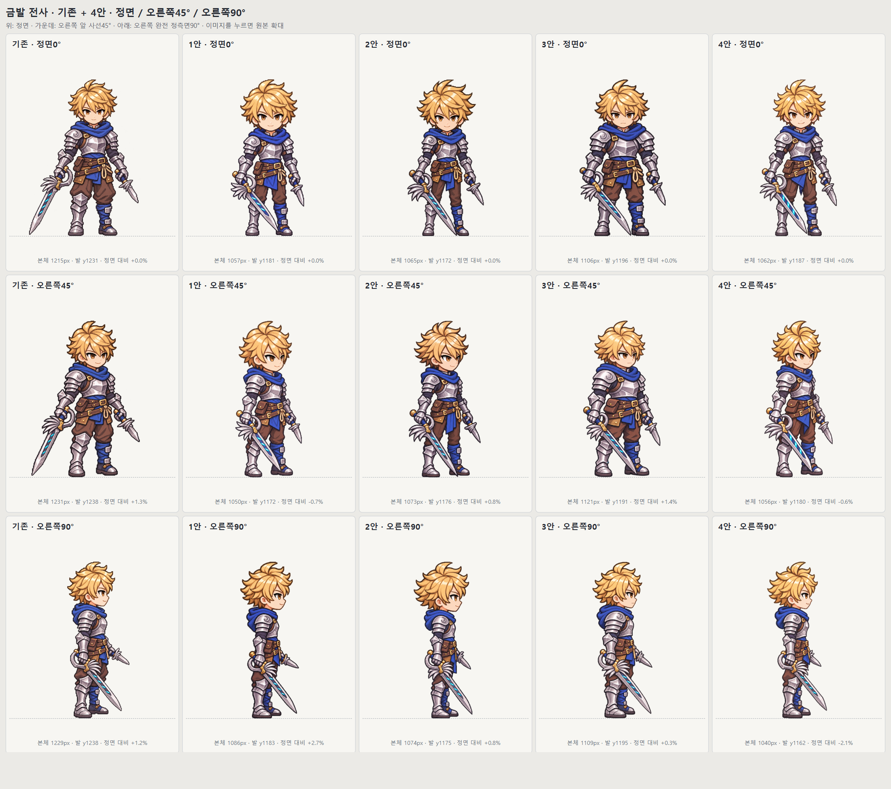

<!doctype html><html lang="ko"><meta charset="utf-8"><meta name="viewport" content="width=device-width,initial-scale=1"><title>금발 전사 15개 비교</title><style>body{margin:0;padding:20px;font:16px/1.6 system-ui;background:#142725;color:#f4eedc}a{color:#ffdc55}nav{display:flex;gap:12px;flex-wrap:wrap}nav a{padding:12px;border:1px solid #9c8e65;border-radius:6px}img{display:block;width:100%;height:auto;background:#eee}main{max-width:1800px;margin:auto}</style><main><nav><a href="../index.html">비교 자료 목록</a><a href="/battle-landscape.html?battle=normal&amp;from=camp">게임에서 배치 비교</a></nav><h1>금발 전사 · 원본＋4안 × 정면·45도·90도</h1><p>비교 이미지를 눌러 원본 크기로 볼 수 있습니다. 시안 선택과 최종 미적 합격은 대기 상태입니다.</p><a href="comparison.png"></a></main></html>